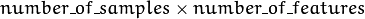
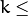

ml.Machine Learning¶
ocl::KNearestNeighbour¶
-
class
ocl::KNearestNeighbour: publicocl::CvKNearest¶
The class implements K-Nearest Neighbors model as described in the beginning of this section.
ocl::KNearestNeighbour¶
Computes the weighted sum of two arrays.
class CV_EXPORTS KNearestNeighbour: public CvKNearest
{
public:
KNearestNeighbour();
~KNearestNeighbour();
bool train(const Mat& trainData, Mat& labels, Mat& sampleIdx = Mat().setTo(Scalar::all(0)),
bool isRegression = false, int max_k = 32, bool updateBase = false);
void clear();
void find_nearest(const oclMat& samples, int k, oclMat& lables);
private:
/* hidden */
};
ocl::KNearestNeighbour::train¶
Trains the model.
-
C++:
ocl::KNearestNeighbour::train(const Mat& trainData, Mat& labels, Mat& sampleIdx=Mat().setTo(Scalar::all(0)), bool isRegression=false, int max_k=32, bool updateBase=false)¶ Parameters: - isRegression – Type of the problem:
truefor regression andfalsefor classification. - maxK – Number of maximum neighbors that may be passed to the method
CvKNearest::find_nearest(). - updateBase – Specifies whether the model is trained from scratch (
update_base=false), or it is updated using the new training data (update_base=true). In the latter case, the parametermaxKmust not be larger than the original value.
- isRegression – Type of the problem:
The method trains the K-Nearest model. It follows the conventions of the generic CvStatModel::train() approach with the following limitations:
- Only
CV_ROW_SAMPLEdata layout is supported. - Input variables are all ordered.
- Output variables can be either categorical (
is_regression=false) or ordered (is_regression=true). - Variable subsets (
var_idx) and missing measurements are not supported.
ocl::KNearestNeighbour::find_nearest¶
Finds the neighbors and predicts responses for input vectors.
-
C++:
ocl::KNearestNeighbour::find_nearest(const oclMat& samples, int k, oclMat& lables)¶ Parameters: - samples – Input samples stored by rows. It is a single-precision floating-point matrix of  size.
- k – Number of used nearest neighbors. It must satisfy constraint: 
CvKNearest::get_max_k(). - labels – Vector with results of prediction (regression or classification) for each input sample. It is a single-precision floating-point vector with
number_of_sampleselements.
ocl::kmeans¶
Finds centers of clusters and groups input samples around the clusters.
-
C++:
ocl::kmeans(const oclMat& src, int K, oclMat& bestLabels, TermCriteria criteria, int attemps, int flags, oclMat& centers)¶ Parameters: - src – Floating-point matrix of input samples, one row per sample.
- K – Number of clusters to split the set by.
- bestLabels – Input/output integer array that stores the cluster indices for every sample.
- criteria – The algorithm termination criteria, that is, the maximum number of iterations and/or the desired accuracy. The accuracy is specified as
criteria.epsilon. As soon as each of the cluster centers moves by less thancriteria.epsilonon some iteration, the algorithm stops. - attempts – Flag to specify the number of times the algorithm is executed using different initial labellings. The algorithm returns the labels that yield the best compactness (see the last function parameter).
- flags –
Flag that can take the following values:
- KMEANS_RANDOM_CENTERS Select random initial centers in each attempt.
- KMEANS_PP_CENTERS Use
kmeans++center initialization by Arthur and Vassilvitskii [Arthur2007]. - KMEANS_USE_INITIAL_LABELS During the first (and possibly the only) attempt, use the user-supplied labels instead of computing them from the initial centers. For the second and further attempts, use the random or semi-random centers. Use one of
KMEANS_*_CENTERSflag to specify the exact method.
- centers – Output matrix of the cluster centers, one row per each cluster center.
ocl::distanceToCenters¶
For each samples in source, find its closest neighour in centers.
-
C++:
ocl::distanceToCenters(const oclMat& src, const oclMat& centers, Mat& dists, Mat& labels, int distType=NORM_L2SQR)¶ Parameters: - src – Floating-point matrix of input samples. One row per sample.
- centers – Floating-point matrix of center candidates. One row per center.
- distType – Distance metric to calculate distances. Supports
NORM_L1andNORM_L2SQR. - dists – The output distances calculated from each sample to the best matched center.
- labels – The output index of best matched center for each row of sample.
The method is a utility function which maybe used for multiple clustering algorithms such as K-means.
Help and Feedback
You did not find what you were looking for?- Ask a question on the Q&A forum.
- If you think something is missing or wrong in the documentation, please file a bug report.